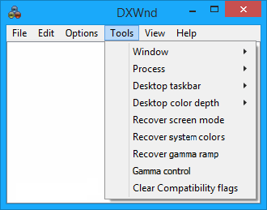

|
Window |
Minimize - Minimizes the currently-running hooked program to the Taskbar. Restore - Restores a minimized hooked program back to a window. Close - Closes the currently-running hooked program. |
|
Process |
Pause - Tries to pause the program by lowering each thread priority to the minimum. Resume - Restore thread priorities. Kill - Kills the last process activated by the DxWnd interface. Very useful for getting rid of games that have gone crazy because of DxWnd and refuse to terminate themselves. (Shortcut key: Ctrl+Pause/Break) |
|
Desktop taskbar |
Hide - Hides the desktop taskbar while running a hooked application. Show - Shows the desktop taskbar while running a hooked application. |
|
Desktop color depth |
On recent platforms, low desktop color depths still work but are no longer supported. This menu lets you ask the system to set the current color depth to 8, 16, 24 or 32 bits per pixel. Some color/resolution combinations may not be supported. |
|
Recover screen mode |
Restores the video mode that DxWnd detected at startup. This is useful for recovering from game crashes or other conditions that can change the desktop resolution or color depth. |
|
Recover system colors |
Recover system colors: some (typically old) programs may try to set the system colors (that is colors for window titles, borders, background panels and so forth) to custom values by using the SetSysColor call. In case this action is not disabled by the LOCKSYSCOLORS flag or recovered at game termination, this menu command brings the system colors back to the values left when DxWnd was last started. |
|
Recover gamma ramp |
Recover gamma ramp: some programs may alter the screen gamma ramp by using the GDI SetdeviceGammaRamp or D3D SetGammaRamp calls. In case this action is not disabled by the DISABLEGAMMARAMP flag, this menu command brings the gamma ramp curve back to the values left when DxWnd was last started. |
|
Gamma control |
See Gamma control. |
|
Clear Compatibility flags |
DxWnd sometimes works better if the operating system isn't attempting to run a game in any compatibility mode. This command deactivates all compatibility modes by erasing the relevant registry keys. |
|
Run "blacker" |
The "hide desktop background" flag creates a black window owned by the target program. This method sometimes fails when the new black window interferes with the other siblings. Blacker.exe is an alternative method based on a separate process that creates black windows independent from the target program. It is more reliable, but requires to be manually turned on and off. |
|
Associate export files |
Associates the .dxw file extension
to the DxWnd /L: |
|
Disassociate export files |
Disassociates the .dxw file extension so clearing the effect of the former associate command. |